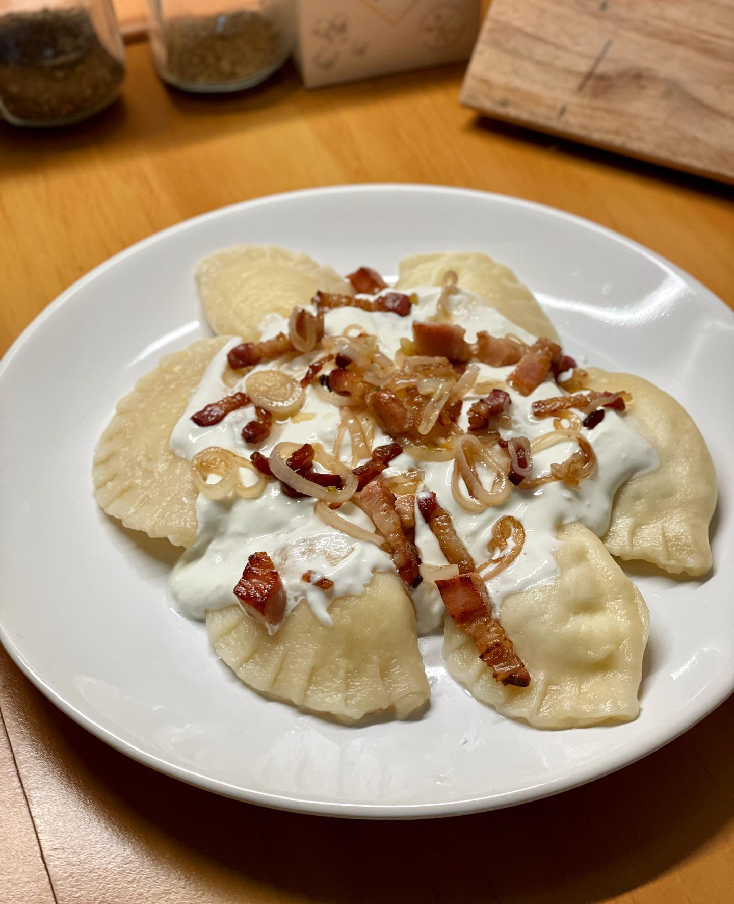

Bryndzové pirohy podľa @foodtipskosice — Normy Jedál
Ak si niekto doma robí sám pirohy, klobúk dole, je to dosť jebačka. Raz sme to s kamošom skúšali, trvalo nám to asi 2 hodiny, zjedli sme ich za 5 minút a ďalšiu hodinu sa pratala kuchyňa😂 Čestne sa teda priznávam, kupujem polotovarové pirohy, vždy máme nejaké v mrazáku. Pirohy máme u nás doma všetci radi, človek to len hodí do vriacej vody, posmaží nejakú cibuľku a slaninku a za pár minút má skvelý obed🤷♂️
No a teraz príbeh, ktorý možno bude znieť až vymyslene, no dávam svoje slovo že tento príbeh je pravdivý🤞🏼 Nedávno mi písali z @myslavskapaskuda, či by som nechcel ochutnať ich pirohy. Hovorím že jasné, prečo by aj nie💁♂️ Dohodli sme sa že mi ich donesú v nejaký deň, no a presne v ten konkrétny deň som bol s Dadom na návšeteve u mojej mamky. Tá mu na obed uvarila pirohy, Dado nevládal dojesť, tak reku dorazím to... Dal som prvé sústo a hovorím si ty kokos, tak tie sú dobré a tak sa obratom pýtam mamky “si robila domáce?”. A ona že “čosi, to sú z Myslavskej Paskudy, najlepšie pirohy robia, už iba od nich kupujem”. A ja len že wow, presne tieto mi majú doniesť poobede😁
Majú bryndzové, zemiakové, aj lekvárové a tie pirohy sú fakt perfektné! Ako úplne seriózne, mnoho salašov by sa mohlo učiť... Sladké som popravde ešte neskúšal, ale tie bryndzové, ach🤤 Mám rád, keď sú bryndzové naozaj bryndzové! Sú ručne robené, chutia fantasticky a sú z Košíc, resp z Myslavy. Určite si od nich vezmite nejaké pirohy na skúšku, myslím že keď raz ochutnáte, inde už pirohy kupovať nebudete😉 To vám garantujem! #foodtipskosice #pirohy #bryndzovepirohy #myslavskapaskuda #kosice #dnesjem